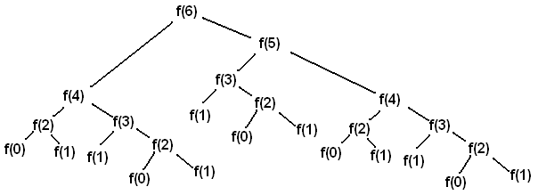
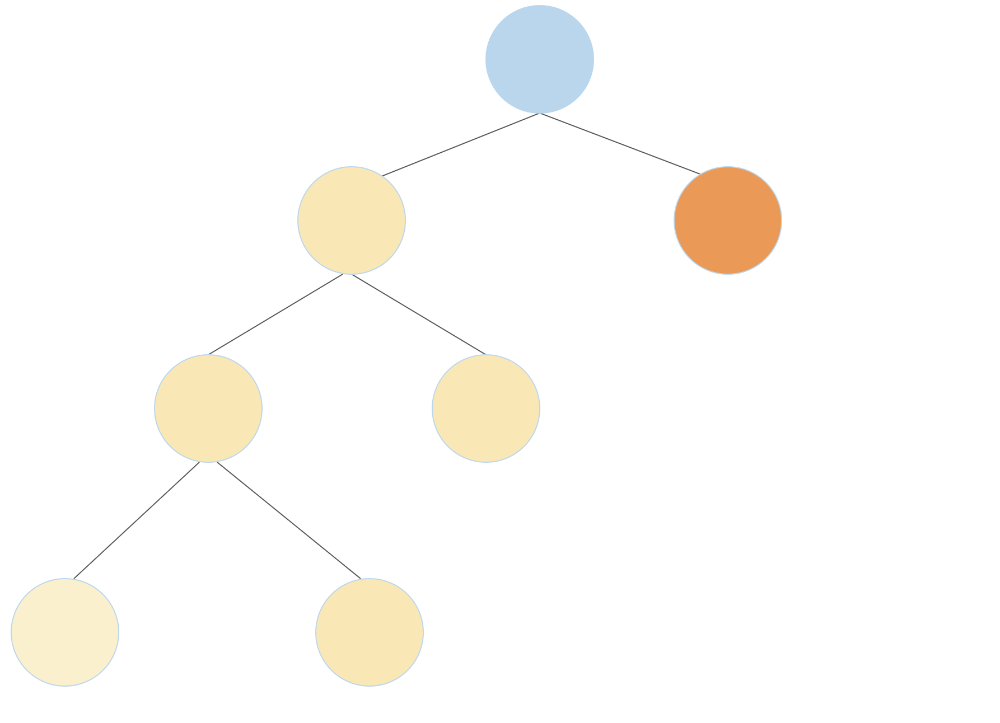
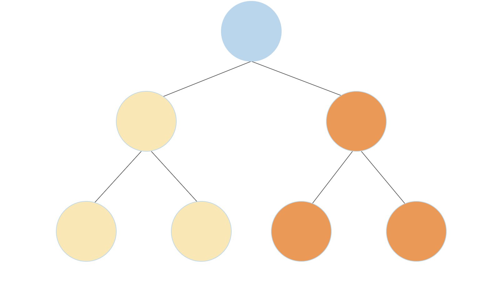
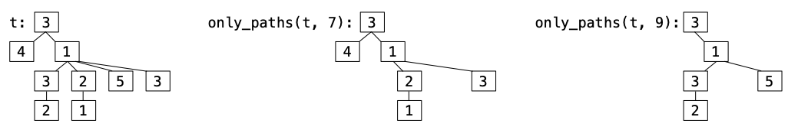

实验 4：序列、树形递归、树
起始文件
下载 lab04.zip。
序列
序列是有序的值的集合，支持按元素选取，并且有长度。我们已经学过列表，但 Python 中其他类型也是序列，包括字符串。
下面通过一个例子来看看我们可以对字符串做哪些操作。
>>> x = 'Hello there Oski!'
>>> x
'Hello there Oski!'
>>> len(x)
17
>>> x[6:]
'there Oski!'
>>> x[::-1]
'!iksO ereht olleH'由于字符串是序列，我们可以对字符串做许多与列表相同的操作。我们甚至可以像遍历列表一样遍历字符串：
>>> x = 'I am not Oski.'
>>> vowel_count = 0
>>> for i in range(len(x)):
... if x[i] in 'aeiou':
... vowel_count += 1
>>> vowel_count
5for 语句会为序列（例如列表或 range）中的每个元素执行代码。每次执行时，for 后面的名字都会绑定到序列中不同的元素。
for <name> in <expression>:
<suite>首先，对 <expression> 求值，它必须求值出一个序列。然后，按顺序对序列中的每个元素：
- 把
<name>绑定到该元素。 - 执行
<suite>。
下面是一个例子：
for x in [-1, 4, 2, 0, 5]:
print("Current elem:", x)这段代码会输出以下内容：
Current elem: -1
Current elem: 4
Current elem: 2
Current elem: 0
Current elem: 5字典包含键值对，并允许通过方括号用键来查找对应的值。每个键必须是唯一的。
>>> d = {2: 4, 'two': ['four'], (1, 1): 4}
>>> d[2]
4
>>> d['two']
['four']
>>> d[(1, 1)]
4键、值或键值对的序列可以分别通过 .keys()、.values() 或 .items() 来访问。
>>> for k in d.keys():
... print(k)
...
2
two
(1, 1)
>>> for v in d.values():
... print(v)
...
4
['four']
4
>>> for k, v in d.items():
... print(k, v)
...
2 4
two ['four']
(1, 1) 4默认情况下，遍历字典就是遍历它的键。
>>> for x in d:
... print(x)
...
2
two
(1, 1)你可以使用 in 来检查字典中是否包含某个键：
>>> 'two' in d
True
>>> 4 in d
False尝试访问字典中不存在的键会导致错误。你可以使用 .get(<key>, <default>)，它会返回字典中 <key> 对应的值；如果该键不存在，则返回 <default>。
>>> d[3]
KeyError: 3
>>> d.get(3, "fun")
"fun"
>>> d.get(2, "fun")
4字典的内容可以使用 = 来修改：
>>> d
{2: 4, 'two': ['four'], (1, 1): 4}
>>> d[(1, 1)] = "61a"
>>> d[(1, 1)]
'61a'字典推导式是一种求值后得到新字典的表达式。
>>> {3*x: 3*x + 1 for x in range(2, 5)}
{6: 7, 9: 10, 12: 13}树形递归
树形递归函数是指会多次调用自身的递归函数，它会产生树状的调用序列。
例如，这是Virahanka-Fibonacci数列：0, 1, 1, 2, 3, 5, 8, 13, ...。
每一项都是前两项之和。这个树形递归函数计算第 n 个 Virahanka-Fibonacci 数。
def virfib(n):
if n == 0 or n == 1:
return n
return virfib(n - 1) + virfib(n - 2)调用 virfib(6) 会得到一个类似倒置树的调用结构（其中 f 就是 virfib）：

每次递归调用 f(i) 都会调用 f(i-1) 和 f(i-2)。每当我们到达 f(0) 或 f(1) 的调用时，就可以直接返回 0 或 1，不再进行更多递归调用。这些调用就是我们的基准情况。
基准情况返回答案时不依赖其他调用的结果。一旦到达基准情况，我们就可以回过头去回答那些导致该基准情况的递归调用。
正如我们将看到的，树形递归对于带有分支选择的问题往往很有效。在这类问题中，你会为每一个分支选择进行一次递归调用。
数据抽象
数据抽象是一组用于组合和分解复合值的函数。其中一个称为构造函数的函数把两个或多个部分组合成一个整体（例如有理数，也叫分数），而另一些称为选择器的函数则返回该整体的各个部分（例如分子或分母）。
def rational(n, d):
"Return a fraction n / d for integers n and d."
def numer(r):
"Return the numerator of rational number r."
def denom(r):
"Return the denominator of rational number r."关键在于，人们可以在不知道这些函数如何实现的情况下使用数据抽象。例如，我们（人类）只要知道 rational、numer 和 denom 的作用，就能验证 mul_rationals 实现得是否正确，而不必知道它们是如何实现的。
def mul_rationals(r1, r2):
"Return the rational number r1 * r2."
return rational(numer(r1) * numer(r2), denom(r1) * denom(r2))然而，Python 要运行程序，数据抽象就需要有实现。使用关于实现的知识就跨越了抽象屏障，抽象屏障把程序中依赖数据抽象实现的部分与不依赖它的部分分隔开来。一个编写良好的程序通常会尽量减少依赖实现的代码量，这样以后修改实现时就不需要重写太多代码。
在使用别人提供的数据抽象时，要把程序写得即使该数据抽象的实现发生变化也仍然正确。
树
树是一种表示信息层次结构的数据结构。文件系统就是树结构的一个很好的例子。例如，在你的 cs61a 文件夹里，有分别存放项目、实验和作业的文件夹。下一层是区分不同作业的文件夹，如 hw01、lab01、hog 等，再往里就是文件本身，包括起始文件和 ok。下面是你 cs61a 目录可能的样子的一张不完整示意图。

可以看到，与自然界中的树不同，树这种抽象数据类型的画法是根在顶部、叶在底部。
对于树 t：
- 它的根标签可以是任意值，
label(t)会返回它。 - 它的分支也是树，
branches(t)会返回一个由分支组成的列表。 - 用
tree(label(t), branches(t))可以构造出一棵完全相同的树。 - 你可以调用以树为参数的函数，例如
is_leaf(t)。 - 这就是操作树的方式。不要使用
t == x、t[0]、x in t或list(t)等写法。 - 没有办法在不破坏抽象屏障的前提下修改一棵树。
下面是一棵示例树 t1，它的分支 branches(t1)[1] 就是 t2。
t2 = tree(5, [tree(6), tree(7)])
t1 = tree(3, [tree(4), t2]) 必做题
必做题
序列
重要：对于所有「Python 会输出什么？」题目，如果你认为答案是
<function...>，请输入Function；如果会报错，请输入Error；如果什么也不显示，请输入Nothing。
许多语言都提供针对序列的 map、filter、reduce 函数。Python 也提供这些函数（我们会在课程后面正式介绍它们），但为了帮助你更好地理解它们的工作原理，你将在下面几道题中自己实现这些函数。
在 Python 中，内置的
map和filter的行为与我们这里定义的my_map和my_filter函数略有不同。
Q1：映射
my_map 接收一个单参数函数 fn 和一个序列 seq，并返回一个列表，其中包含把 fn 应用到 seq 中每个元素的结果。
函数体只能使用一行。（提示：使用列表推导式。）
def my_map(fn, seq):
"""Applies fn onto each element in seq and returns a list.
>>> my_map(lambda x: x*x, [1, 2, 3])
[1, 4, 9]
>>> my_map(lambda x: abs(x), [1, -1, 5, 3, 0])
[1, 1, 5, 3, 0]
>>> my_map(lambda x: print(x), ['cs61a', 'summer', '2023'])
cs61a
summer
2023
[None, None, None]
"""
return ______
用 ok 测试你的代码：
python3 ok -q my_map用 ok 运行本地语法检查（它会检查函数体是否只用了一行）：
python3 ok -q my_map_syntax_checkQ2：过滤
my_filter 接收一个谓词函数 pred 和一个序列 seq，并返回一个列表，其中包含 seq 中所有使 pred 返回 True 的元素。（谓词函数是指接收一个参数并返回 True 或 False 的函数。）
函数体只能使用一行。（提示：使用列表推导式。）
def my_filter(pred, seq):
"""Keeps elements in seq only if they satisfy pred.
>>> my_filter(lambda x: x % 2 == 0, [1, 2, 3, 4]) # new list has only even-valued elements
[2, 4]
>>> my_filter(lambda x: (x + 5) % 3 == 0, [1, 2, 3, 4, 5])
[1, 4]
>>> my_filter(lambda x: print(x), [1, 2, 3, 4, 5])
1
2
3
4
5
[]
>>> my_filter(lambda x: max(5, x) == 5, [1, 2, 3, 4, 5, 6, 7])
[1, 2, 3, 4, 5]
"""
return ______
用 ok 测试你的代码：
python3 ok -q my_filter用 ok 运行本地语法检查（它会检查函数体是否只用了一行）：
python3 ok -q my_filter_syntax_checkQ3：归约
my_reduce 接收一个双参数函数 combiner 和一个非空序列 seq，并使用 combiner 把 seq 中的元素合并成一个值。
def my_reduce(combiner, seq):
"""Combines elements in seq using combiner.
seq will have at least one element.
>>> my_reduce(lambda x, y: x + y, [1, 2, 3, 4]) # 1 + 2 + 3 + 4
10
>>> my_reduce(lambda x, y: x * y, [1, 2, 3, 4]) # 1 * 2 * 3 * 4
24
>>> my_reduce(lambda x, y: x * y, [4])
4
>>> my_reduce(lambda x, y: x + 2 * y, [1, 2, 3]) # (1 + 2 * 2) + 2 * 3
11
"""
"*** YOUR CODE HERE ***"
用 ok 测试你的代码：
python3 ok -q my_reduce数据抽象
城市
假设我们有一个表示城市的数据抽象。一个城市有名称、纬度坐标和经度坐标。
我们的数据抽象有一个构造函数：
make_city(name, lat, lon)：创建一个具有给定名称、纬度和经度的城市对象。
我们还提供以下选择器，用来获取每个城市的信息：
get_name(city)：返回城市的名称get_lat(city)：返回城市的纬度get_lon(city)：返回城市的经度
下面是我们如何使用构造函数和选择器来创建城市并提取它们的信息：
>>> berkeley = make_city('Berkeley', 122, 37)
>>> get_name(berkeley)
'Berkeley'
>>> get_lat(berkeley)
122
>>> new_york = make_city('New York City', 74, 40)
>>> get_lon(new_york)
40如果你好奇这些函数是如何实现的，所有的选择器和构造函数都可以在实验文件中找到。但数据抽象的意义在于，在编写关于城市的程序时，我们并不需要知道它的实现。
Q4：距离
现在我们来实现函数 distance，它计算两个城市对象之间的距离。回想一下，两对坐标 (x1, y1) 和 (x2, y2) 之间的距离可以通过计算 (x1 - x2)**2 + (y1 - y2)**2 的 sqrt 求得。为了方便，我们已经为你导入了 sqrt。请把城市的纬度和经度当作它的坐标；你需要使用选择器来获取这些信息！
from math import sqrt
def distance(city_a, city_b):
"""
Returns the distance between city_a and city_b according to their
coordinates.
>>> city_a = make_city('city_a', 0, 1)
>>> city_b = make_city('city_b', 0, 2)
>>> distance(city_a, city_b)
1.0
>>> city_c = make_city('city_c', 6.5, 12)
>>> city_d = make_city('city_d', 2.5, 15)
>>> distance(city_c, city_d)
5.0
"""
"*** YOUR CODE HERE ***"
用 ok 测试你的代码：
python3 ok -q distanceQ5：更近的城市
接下来实现 closer_city，这个函数接收一个纬度、一个经度和两个城市，并返回距离给定经纬度更近的那个城市的名称。
本题你只能使用选择器 get_name、get_lat、get_lon，构造函数 make_city，以及你刚刚定义的 distance 函数。
提示：如何用你的
distance函数求出给定位置到每个给定城市的距离？
def closer_city(lat, lon, city_a, city_b):
"""
Returns the name of either city_a or city_b, whichever is closest to
coordinate (lat, lon). If the two cities are the same distance away
from the coordinate, consider city_b to be the closer city.
>>> berkeley = make_city('Berkeley', 37.87, 112.26)
>>> stanford = make_city('Stanford', 34.05, 118.25)
>>> closer_city(38.33, 121.44, berkeley, stanford)
'Stanford'
>>> bucharest = make_city('Bucharest', 44.43, 26.10)
>>> vienna = make_city('Vienna', 48.20, 16.37)
>>> closer_city(41.29, 174.78, bucharest, vienna)
'Bucharest'
"""
"*** YOUR CODE HERE ***"
用 ok 测试你的代码：
python3 ok -q closer_cityQ6：不要违反抽象屏障！
注意：这道题没有需要写代码的部分（前提是你正确实现了前两道题）。
在编写使用数据抽象的函数时，我们应尽可能使用构造函数和选择器，而不是假定数据抽象的实现方式。依赖数据抽象的底层实现被称为违反抽象屏障。
即使你违反了抽象屏障，前几题的 doctest 也有可能通过。要检查你是否违反了，请运行以下命令：
用 ok 测试你的代码：
python3 ok -q check_city_abstractioncheck_city_abstraction 函数只用于这个 doctest，它会把原来抽象的实现替换成别的东西，运行前两部分的测试，然后再恢复原来的抽象。
抽象屏障的本质保证了：只要正确使用了构造函数和选择器，改变数据抽象的实现就不应影响任何使用该数据抽象的程序的功能。
如果前几题的 Ok 测试通过了但这道题没有通过，修复起来很简单！只需把任何违反抽象屏障的代码替换为合适的构造函数或选择器即可。
请确保你的函数在数据抽象的第一种和第二种实现下都能通过测试，并且在继续之前你理解为什么它们在两种实现下都应该有效。
树
Q7：WWPD：树
用 ok 回答下面的「Python 会输出什么？」（WWPD）题目：
python3 ok -q wwpd -u如果代码报错请输入 Type
Error，如果没有任何显示则输入Nothing。如果卡住了，就把树画在黑板上或纸上！
>>> from lab04 import *
>>> t = tree(1, tree(2))
______Error
>>> t = tree(1, [tree(2)])
______Nothing
>>> label(t)
______1
>>> label(branches(t)[0])
______2
>>> x = branches(t)
>>> len(x)
______1
>>> is_leaf(x[0])
______True
>>> branch = x[0]
>>> label(t) + label(branch)
______3
>>> len(branches(branch))
______0>>> from lab04 import *
>>> b1 = tree(5, [tree(6), tree(7)])
>>> b2 = tree(8, [tree(9, [tree(10)])])
>>> t = tree(11, [b1, b2])
>>> for b in branches(t):
... print(label(b))
______5
8
>>> for b in branches(t):
... print(is_leaf(branches(b)[0]))
...
______True
False
>>> [label(b) + 100 for b in branches(t)]
______[105, 108]
>>> [label(b) * label(branches(b)[0]) for b in branches(t)]
______[30, 72]Q8：完美平衡
实现 sum_tree，它返回树 t 中所有 label 的和。
def sum_tree(t):
"""Add all elements in a tree.
>>> t = tree(4, [tree(2, [tree(3)]), tree(6)])
>>> sum_tree(t)
15
"""
"*** YOUR CODE HERE ***"
用 ok 测试你的代码：
python3 ok -q sum_tree然后实现 balanced，它返回 t 的每个分支的总和是否相同，以及这些分支本身是否也平衡。

用 ok 测试你的代码：
python3 ok -q balanced挑战：这两部分都只用 1 行代码完成。
本地查看得分
你可以在本地查看本次作业每道题的得分，运行：
python3 ok --score选做题
这些是选做题。即使不做，本次作业仍然可以拿到全部学分。不过它们是不错的练习，建议还是做一下！
Q9：树的数目
满二叉树是指每个节点要么有 2 个分支，要么有 0 个分支，但绝不会只有 1 个分支的树。
编写一个函数，返回恰好有 n 个叶子的不同满二叉树结构的数量。关于 1 个、2 个和 3 个叶子时可能的满二叉树结构，请参见 doctest 中的图示。
提示：一棵满二叉树可以通过把两棵较小的满二叉树连接到根节点上来构造。如果这两棵较小的满二叉树分别有
a个和b个叶子，那么新的满二叉树就会有a + b个叶子。例如，如下面第一张图所示，一棵有 4 个叶子的满二叉树可以通过把一棵有三个叶子的满二叉树（黄色）与一棵有一个叶子的满二叉树（橙色）连接来构造。有 4 个叶子的满二叉树也可以通过连接两棵各有 2 个叶子的满二叉树来构造（第二张图）

对组合数学感兴趣的同学，这道题其实有一个闭式解）：
def num_trees(n):
"""Returns the number of unique full binary trees with exactly n leaves. E.g.,
1 2 3 3 ...
* * * *
/ \ / \ / \
* * * * * *
/ \ / \
* * * *
>>> num_trees(1)
1
>>> num_trees(2)
1
>>> num_trees(3)
2
>>> num_trees(8)
429
"""
"*** YOUR CODE HERE ***"
用 ok 测试你的代码：
python3 ok -q num_treesQ10：仅有的路径
实现 only_paths，它接收一棵由数字构成的树 t 和一个数 n。它返回一棵新树，其中只包含 t 中位于从根到某个叶子的路径上的节点，且这些路径上的 label 之和为 n；如果没有路径之和等于 n，则返回 None。
下面是涉及 t 的 doctest 示例的图示。

def only_paths(t, n):
"""Return a tree with only the nodes of t along paths from the root to a leaf of t
for which the node labels of the path sum to n. If no paths sum to n, return None.
>>> print_tree(only_paths(tree(5, [tree(2), tree(1, [tree(2)]), tree(1, [tree(1)])]), 7))
5
2
1
1
>>> t = tree(3, [tree(4), tree(1, [tree(3, [tree(2)]), tree(2, [tree(1)]), tree(5), tree(3)])])
>>> print_tree(only_paths(t, 7))
3
4
1
2
1
3
>>> print_tree(only_paths(t, 9))
3
1
3
2
5
>>> print(only_paths(t, 3))
None
"""
if ____:
return t
new_branches = [____ for b in branches(t)]
if ____(new_branches):
return tree(label(t), [b for b in new_branches if ____])
用 ok 测试你的代码：
python3 ok -q only_paths